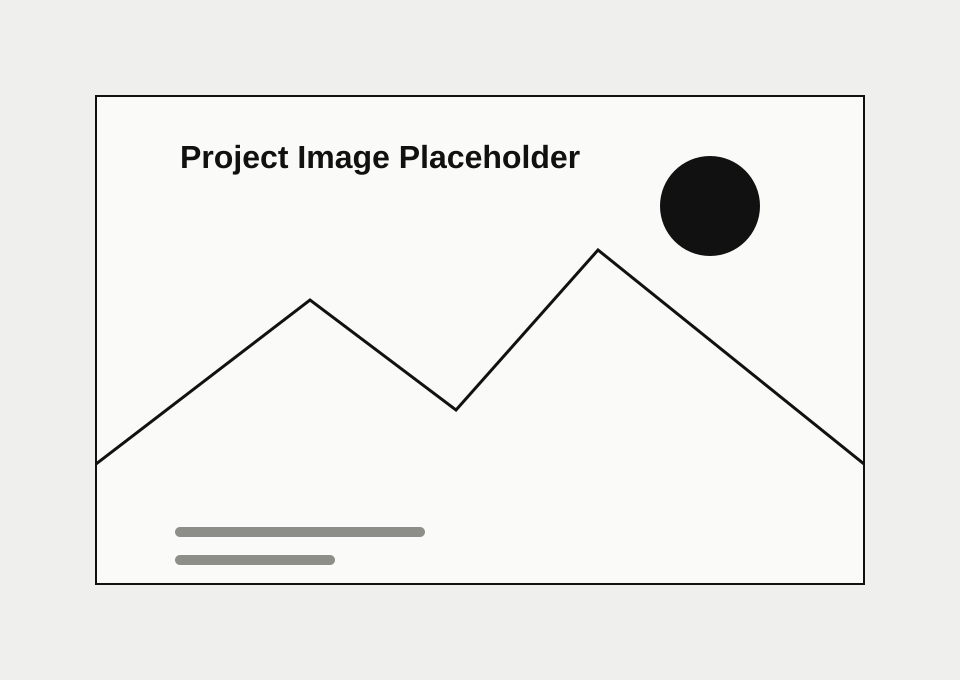

空间观察
通过封闭环境和可交互物体建立玩家的初始目标感。

玩家通过移动交互球、匹配容器指标和观察颜色反馈完成任务，最终打破封闭空间并进入开放场景。项目强调规则理解、空间操作和视觉反馈之间的关系。
项目主题为“自我突破”，希望用封闭空间、规则匹配和场景变化表达从限制到开放的体验转折，因此核心不是复杂系统，而是清楚的交互流程与反馈。
通过封闭环境和可交互物体建立玩家的初始目标感。
玩家需要将交互球与容器指标对应，完成规则判断。
使用明确的状态颜色区分正确与错误，提高规则理解效率。
通过完成任务后的空间变化强化“突破”的主题表达。

后续可加入 Unity 交互流程演示录屏。
把任务目标收敛为球与容器匹配，并用颜色反馈降低试错成本。
用封闭空间到开放空间的可见变化，让叙事意义落到交互结果上。
完成 Unity 场景、交互规则、状态反馈和完整体验流程原型，并整理交互流程图与演示材料。
能把主题、任务和反馈串成可体验的空间流程。
能完成场景搭建、状态判断和可演示交互原型。